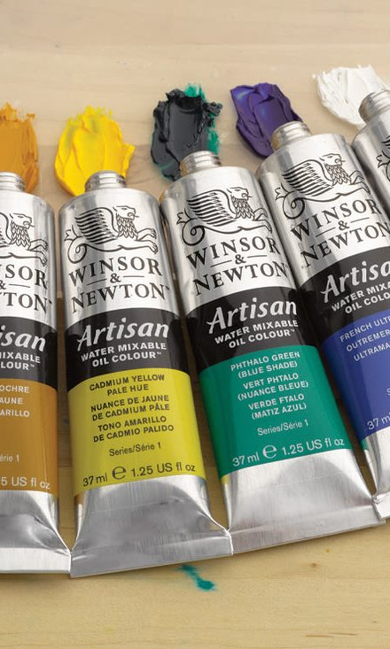
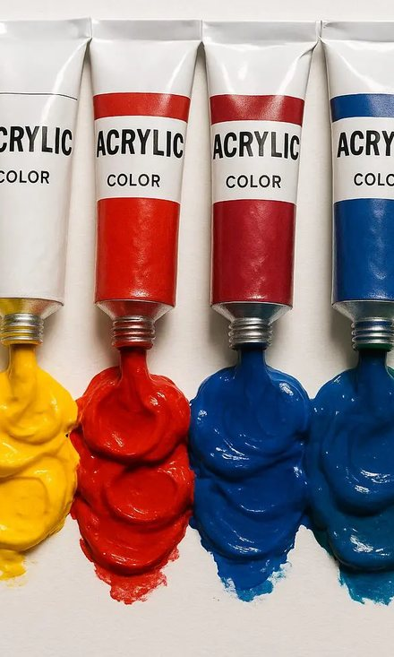
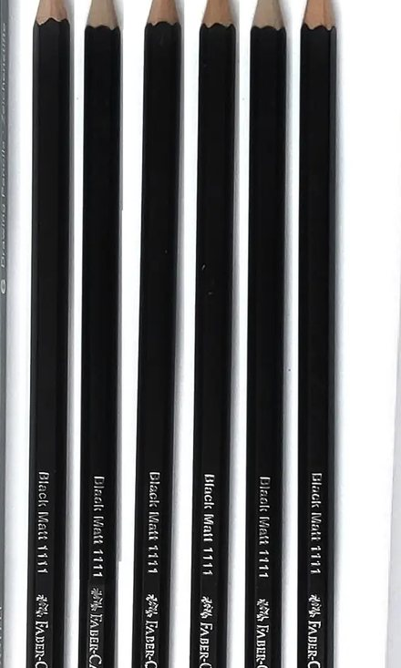
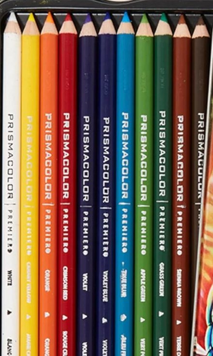
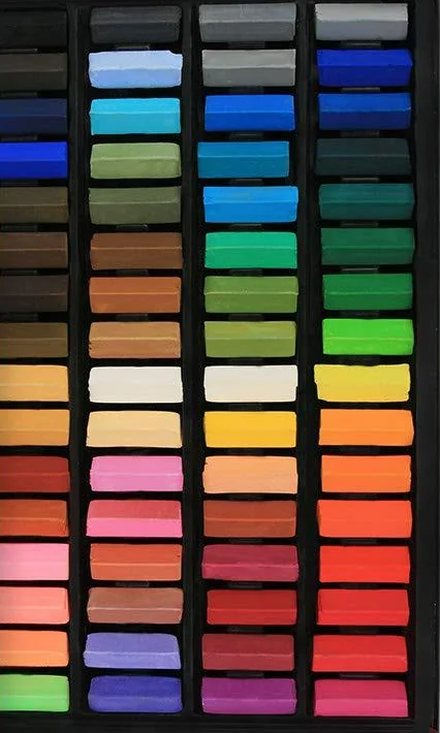
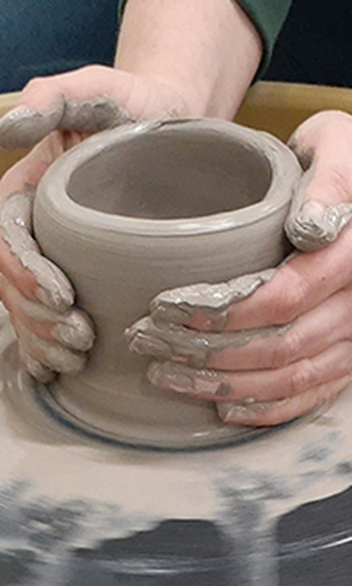

Painting 4 pieces
Flamenco
On the wall at home
Falls
The Reach
Garita
Drawing 3 pieces
Underworld
Drapery Study
Scallywags Hoedown
Pastel 1 piece
Urban Primate
Sculpture 1 piece
Octopus
In progress, wet clay
Fine art
The hands-on side of my creative work, where light, form and composition come first. Select any piece to see it larger.
Every piece here starts with a different material. Here is each one, and the work it became.

 Used in · Flamenco
Oil
On canvas · 1 work
Used in · Flamenco
Oil
On canvas · 1 work

Used in ·Garita Acrylic On canvas · 3 works
 Used in ·Underworld
Graphite
On paper · 2 works
Used in ·Underworld
Graphite
On paper · 2 works

 Used in ·Scallywags Hoedown
Colored pencil
On paper · 1 work
Used in ·Scallywags Hoedown
Colored pencil
On paper · 1 work

 Used in ·Urban Primate
Pastel
On paper · 1 work
Used in ·Urban Primate
Pastel
On paper · 1 work

 Used in ·Octopus
Clay
Sculpted by hand · 1 work
Used in ·Octopus
Clay
Sculpted by hand · 1 work
On the wall at home
In progress, wet clay